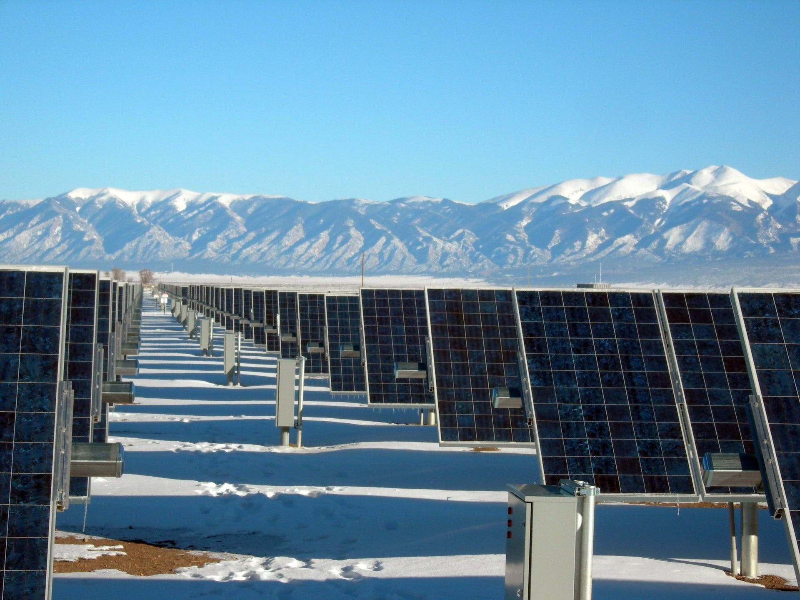
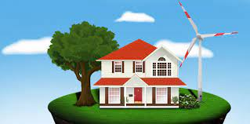
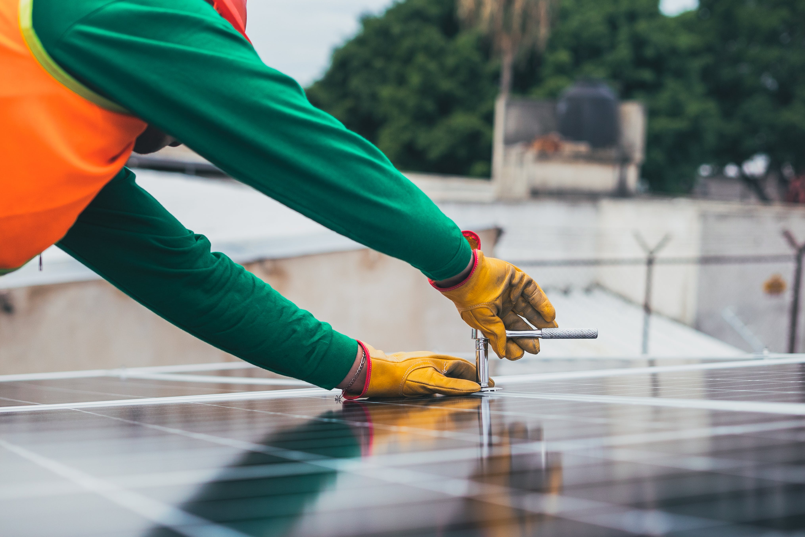

Energia verde
În practică sunt considerate energii regenerabile (cunoscute și ca „energii verzi”) energiile ce provin din surse care fie că se regenerează de la sine în scurt timp, fie sunt surse practic inepuizabile. Termenul de energie regenerabilă se referă la forme de energie produse prin transferul energetic al energiei rezultate din procese naturale regenerabile. Astfel, energia luminii solare, a vânturilor, a apelor curgătoare, a proceselor biologice și a căldurii geotermale pot fi captate de către oameni utilizând diferite procedee.



